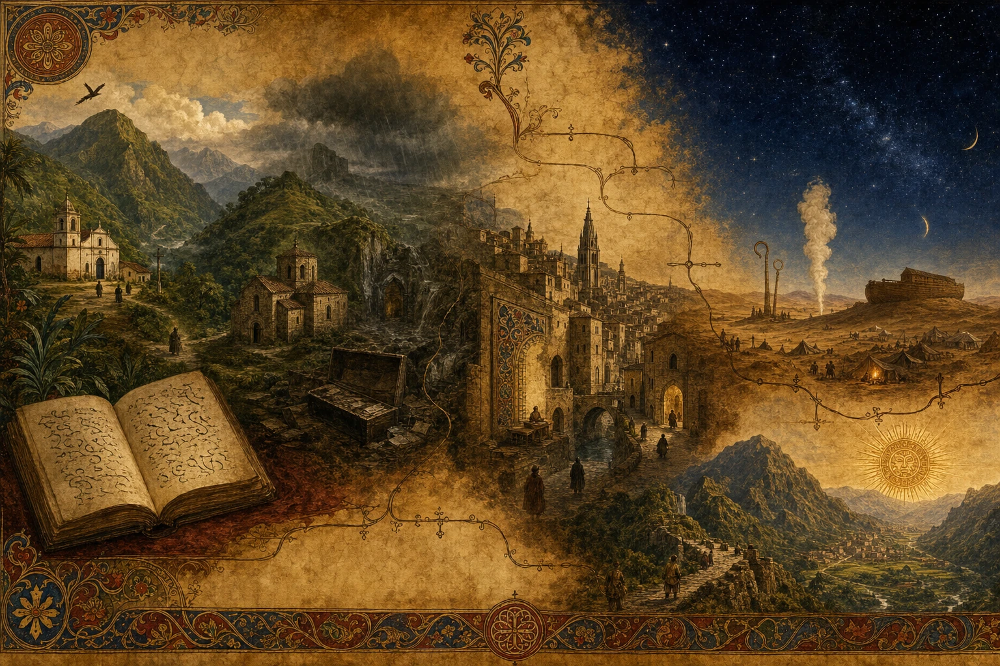
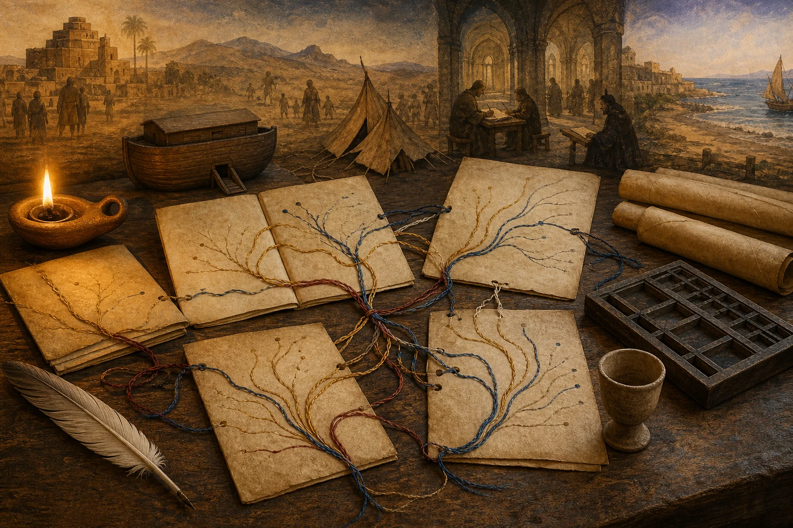

Todas las cadenas disponibles, desde la familia actual hasta los módulos históricos más antiguos, con evidencia, reconstrucción y tradición separadas.
Edición familiarRAÍZ v1 · 24-07-2026
✦
Certeza confirmada. La estrella se refiere a una proposición exacta respaldada por un documento inspeccionado o por memoria familiar directa. El texto sin estrella puede reunir genealogías publicadas, reconstrucciones, tradición, leyenda o imaginario familiar. Las imágenes son recreaciones editoriales, no retratos ni documentos.
Alcance
Los árboles completos de Alejo y Lau, siempre separados, con cadenas documentadas, reconstrucciones probables, escenarios rivales y módulos profundos.
Frontera abierta
No habrá acceso a nuevos documentos familiares ni a los expedientes portugueses. Los vacíos se trabajan mediante inferencia controlada y se muestran como cortes, no como hechos inventados.
Historia familiarEdición RAÍZ v1
Cómo se lee un árbol máximo
La decisión
La familia no tendrá acceso a los expedientes genealógicos portugueses ni a nuevos documentos distintos de los que ya entregó. Esto cambia el método, pero no obliga a detener la historia.
RAÍZ conserva toda la cadena disponible. Cuando falta una partida, las generaciones propuestas no desaparecen. Entran como reconstrucción, genealogía publicada, memoria o tradición y siguen formando parte del relato familiar.
Un símbolo y una regla
El sistema visible es deliberadamente sencillo:
✦ = proposición confirmada por documento, texto inspeccionado,
hecho histórico o memoria familiar directa
sin símbolo = reconstrucción, genealogía publicada, tradición, leyenda o imaginario familiar
La estrella se aplica a una frase precisa. ✦ Texto confirma que una fuente dice algo; no confirma que el hecho narrado ocurriera ni que la persona fuera antepasada de la familia. Los grados A, B, C, D y E siguen guardados en el archivo de investigación y en el visor privado. El lector de los libros no necesita cargar con esa contabilidad en cada párrafo. Basta con reconocer la estrella de certeza y saber que el resto es la reconstrucción máxima que logramos reunir.
Una genealogía de Geni, Geneanet, MyHeritage, FamilySearch, Genealogías de Colombia o un libro familiar puede entrar en la narración. Su presencia demuestra que esa historia ha sido transmitida; no convierte por sí sola cada parentesco en certeza.
Dos árboles, no una mezcla
Alejo y Lau llegan juntos sólo en su familia actual. Sus ascendencias se mantienen separadas. Incluso cuando dos ramas repiten los nombres Gómez de Castro, Joseph Gómez o Lucía Ximénez, no se fusionan sin una identidad transdocumental específica.
El atlas puede mostrar una intersección candidata y contar lo que significaría. Sólo llevará ✦ cuando la identidad común esté confirmada.
Qué significa “toda la cadena”
Incluye:
cada filiación moderna aceptada por la familia;
cada tramo documental A;
cada reconstrucción B suficientemente coherente;
las alternativas C que compiten por un mismo lugar;
los módulos históricos que continuarían la historia si un puente se demostrara;
las rutas sefardíes, reales, incas, levíticas y bíblicas como tradiciones graduadas;
los cortes donde el archivo ya no permite elegir.
El árbol máximo puede recorrer padres propuestos, reyes, conversos, incas y personajes bíblicos cuando una fuente genealógica o una tradición ofrece ese camino. Al cruzar ese umbral, el relato continúa sin la estrella de certeza.
La promesa narrativa
Cada línea tendrá dos voces. La primera contará el viaje humano: pueblos, oficios, libros, matrimonios, desplazamientos y objetos. La segunda dirá qué clase de evidencia sostiene cada paso.
La estrella dice dónde sabemos. La narración conserva todo lo demás: lo probable, lo transmitido, lo legendario y lo sagrado.
Historia familiarEdición RAÍZ v1
Todas las líneas de Alejo
El punto de partida
Alejo nace dentro de dos grandes territorios familiares. Por José Samuel llegan Arango, Uribe, Martínez y Villa. Por Marta Lucía llegan Gómez, Yepes, Rendón y Suárez. Ninguna de esas ramas es secundaria: cada una conserva una parte distinta de la historia.
✦ Alejo
├── ✦ José Samuel Arango Martínez
│ ├── Samuel Arango Uribe
│ └── Paulina Martínez Villa
└── ✦ Marta Lucía Gómez Rendón
├── Francisco Eladio “Pacho Eladio” Gómez Yepes
└── Marta Enriqueta Rendón Suárez
Las primeras filiaciones son A_FAMILY-ATTESTED. Las actas afinan fechas y nombres, pero no reabren quiénes fueron sus padres y abuelos.
Línea A — La varonía Arango
Alejo
← ✦ José Samuel Arango Martínez A_FAMILY
← ✦ Samuel Arango Uribe A_FAMILY / A en actos
← Luis Eduardo Arango + Eva Uribe A / B identidad
← Leocadio María Arango + Ana Joaquina Arango B
← Luis María Arango Trujillo + Rita Uribe A / B
← ✦ José Antonio Arango Ángel + Josefa Trujillo A
← Cristóbal Arango Echeverri + Lorenza Ángel Uribe B_STRONG+
← José Eugenio de Arango + Carmela Echeverri B_STRONG
← ✦ Esteban de Arango y Valdés + Gertrudis Vélez A
← ✦ Antonio de Arango Valdés + Olaya A
⇢ Juan del Campo Valdés + María Díez de Arango B_SECONDARY
⇢ familias del Campo/Valdés y Suárez de Arango B/C
← información original de 1654 CORTE
La historia avanza desde Medellín y La Candelaria hacia Rionegro. En 1697 José Eugenio aparece como hijo de Esteban y Gertrudis; en 1702 otra hoja vuelve a situarlo dentro de la misma pareja. El matrimonio de Esteban permite llegar a Antonio de Arango Valdés.
La continuación asturiana procede de una genealogía de 1911 que cita una información del 23 de diciembre de 1654. Dice que Antonio había partido hacia Sevilla con intención de pasar a Indias. Como el original no está disponible, Juan del Campo y María Díez entran al árbol máximo como B_SECONDARY, no como A.
Más atrás existen personas Arango en Pravia en 1406 y 1444. Son historia documentable del apellido, pero no una continuidad demostrada con Antonio. En el atlas aparecen después de un corte.
Línea B — Eva Uribe y los Gómez de Castro coloniales
Samuel Arango Uribe
← ✦ Eva Uribe Bouhot A
← Dionicio Benito Alejandro Uribe Gómez + Úrsula Bouhot A/B
← ✦ Pedro Uribe + María Encarnación Gómez A
← Juan Crisóstomo Gómez + Carmen Alberta Madrid A/B+
← Nicolás Gómez de Ureña + Bernardina Gómez de Castro A/B+
← Pedro/Joseph Gomes de Castro + Lucía Ximénez Fajardo A/B
← ✦ Bernardo Gomes de Castro + Gertrudis de Betancur A
← Cristóbal “el Mozo” + María Álvarez del Pino A/B+
← ✦ Cristóbal padre + Cathalina Macheo A
⇢ Cristóbal “el Viejo” B/C
← padres y origen CORTE
Esta es la cadena colonial más profunda y compacta de Alejo. Pasa por bautismos, matrimonios, un no impedimento y el testamento de 1724. El muro no está en Toledo. Está antes: en saber quién fue exactamente el Cristóbal más antiguo de Antioquia.
Después del corte aparece el núcleo histórico Castro–Abolafi de Toledo. Ese bloque existe y está bien estudiado, pero no se dibuja como padre del Cristóbal antioqueño.
Línea C — Uribe, Madrid, Vélez, Restrepo y ramas asociadas
La misma subida por Eva se abre lateralmente:
María Encarnación Gómez
← María del Carmen Alberta Madrid
← Simeón de la Madrid + María Micaela Uribe
← Joseph Antonio Uribe + Bárbara Rosalia Vélez
├── Vicente Uribe + Juana Sánchez de la Hinosa
└── Pablo Joseph Vélez de Rivero + María Gertrudis Restrepo
├── Juan Vélez de Rivero + Manuela de Toro Zapata
└── Alonso de Restrepo + Catarina Lopes Tuesta
Desde Juana Sánchez aparecen Sánchez de la Hinosa, Arroyave, Peláez y Velásquez de Obando. Desde Vélez y Restrepo aparecen Rivero, Toro Zapata, Guerra, López de Restrepo, López Tuesta y Correal. Son líneas coloniales A/B que muestran que la historia no fue una sola varonía.
Línea D — Paulina Martínez Villa
Paulina Martínez Villa
← ✦ Ramón Martínez + Emiliana Villa A
├── Ramón ← Guillermo Martínez + María de Jesús Barberi B
└── Emiliana ← Federico Villa + Paulina Martínez B
├── Federico ← Isidoro Faustino Villa + Mercedes Pardo
└── Paulina ← Manuel Cesáreo Martínez + Nieves Pardo
La boda de 1934 da la primera pareja en A. Los bautismos de hermanos y nietos sostienen la expansión en B. Más atrás aparecen Matías de Villa, Isabel Gómez, José Pardo, Estefanía Armero y otras ramas pendientes de actos propios.
Línea E — Pacho Eladio, Gómez, Yepes y Piedrahita
Alejo
← ✦ Marta Lucía Gómez Rendón A_FAMILY
← ✦ Pacho Eladio Gómez Yepes A_FAMILY
⇢ Francisco Eladio Gómez + María Romualda Yepes C_HIGH
├── Francisco Eladio ← Eladio Gómez + Ana Francisca Posada
│ └── Ana Francisca ← ✦ Joaquín Posada + Natalia Muñoz A
└── María Romualda ← ✦ Alberto Yepes + María Dolores Yepes A
⇢ Alberto ← Francisco Yepes + Romualda Piedrahita B
⇢ Francisco Yepes Arango + Romualda Piedrahita Yarce C
La historia de Pacho tiene dos dimensiones. Una es familiar: Donmatías, el hogar y las generaciones Gómez–Yepes. La otra es pública: la Compañía Nacional de Chocolates y su aporte a la historia del Álbum Jet.
El hueco cercano es Pacho→Francisco Eladio/María Romualda. Más atrás, dos mujeres Romualda y una fusión equivocada entre Francisco Yepes y José Gregorio obligan a mantener escenarios separados.
✦ Un matrimonio parroquial de Campamento del 27 de enero de 1841 nombra a Nepomuceno Yepes como hijo legítimo de Francisco Yepes y Rumalda Piedrahita. El documento confirma la existencia del hogar parental y conserva la forma Rumalda. No demuestra que Francisco fuera José Gregorio Francisco Ángel Yepes Arango ni decide si Rumalda llevaba Yarce o Velásquez; esas continuaciones proceden de los árboles y siguen dentro de la reconstrucción.
Línea F — Rendón y Suárez
Marta Enriqueta Rendón Suárez
⇢ Ismael de Jesús Rendón + María Dolores Suárez C_PLAUSIBLE
← generaciones anteriores ABIERTAS
Esta es una de las ramas menos desarrolladas. El árbol máximo conserva la pareja probable, la contradicción 1923/1924 y el origen en Donmatías, sin fabricar generaciones anteriores.
Línea G — Gómez de Ureña, Coronel y Pallache
Una ruta lateral intenta continuar desde Gómez de Ureña hacia Antonio Pérez, Catalina Gómez, Coronel y Pallache. La mortuoria de 1657 prueba a Ana Poblete como madre de Alonso y Juan, y llama hermanos a los dos hombres. Falta aún el testamento de Domingo de 1624 y una persona común con los bloques conversos.
Gómez de Ureña americano A/B/C
--- CORTE ---
Seneor / Coronel castellano B histórico
--- CORTE ---
Pallache de Fez B histórico
--- CORTE ---
Samuel ha-Leví / Abulafia C histórico
La historia puede contarse completa porque cada bloque tiene personas reales. La ascendencia no puede presentarse como continua porque los cortes también son reales.
Línea H — Mier, Estrada y el horizonte carolingio
Gutierre Villar de Mier y Mencía Fernández de Estrada forman la frontera de otro camino. Detrás existen probanzas, expedientes de Santiago, la venta de 1195 y una cadena histórica hacia León, Borgoña, Ivrea y el mundo carolingio. La línea familiar se detiene antes de entrar a ese bloque.
Resultado para Alejo
El árbol máximo de Alejo puede narrar, sin esconder nada:
una varonía Arango hasta el siglo XVII;
una continuación asturiana secundaria;
una cadena colonial Gómez de Castro profunda;
redes Uribe, Madrid, Vélez, Restrepo, Arroyave y Toro;
Martínez–Villa–Pardo;
Gómez–Yepes–Posada–Piedrahita;
Rendón–Suárez todavía corto;
módulos Coronel, Pallache, Abulafia, Mier, Estrada, carolingios y aarónicos después de cortes explícitos.
Historia familiarEdición RAÍZ v1
Todas las líneas de Lau
Nota global de lectura — RAÍZ v1. Ésta es una reconstrucción máxima desde documentos, libros, transcripciones y páginas genealógicas. ✦ marca certeza confirmada por documento inspeccionado o memoria familiar directa. El texto sin estrella conserva la reconstrucción, la genealogía publicada, la tradición o la leyenda. ⇢ introduce una continuación narrativa y CORTE señala dónde termina la prueba sin borrar el módulo posterior. El árbol de Lau permanece separado del de Alejo.
Dos mitades familiares
Lau reúne la ascendencia de César Eugenio Gómez Gómez y María Lucía “Lula” Vargas Hernández.
✦ Lau
├── ✦ César Eugenio Gómez Gómez
│ ├── César Javier Diego Gómez Ramírez
│ └── María Leonor Gómez
└── ✦ María Lucía “Lula” Vargas Hernández
├── Enrique Vargas Umaña
└── Magdalena Hernández Bernal
Línea A — César, Eugenio y los Gómez de Marinilla
Lau
← ✦ César Eugenio Gómez Gómez A_FAMILY
← César Javier Diego Gómez Ramírez + María Leonor A_FAMILY / A
← Juan Bautista Eugenio Gómez + Teresa Ramírez A/B+
← ✦ Fulgencio Gómez + María Jesús Gómez A
← Leocadio Gómez + Juana Gómez A/B
← José María Gómez Hoyos + María del Rosario Alzate B_STRONG+
← Francisco Miguel Gómez + Manuela Hoyos A/B_STRONG
← Joseph Gómez [de Castro] + Lucía Ximénez A en hijos / B identidad
← padres de Joseph CORTE
El bautismo de Francisco Miguel del 1 de mayo de 1740 cambió la frontera. El niño aparece como hijo de Jph Gomes y Luzia Ximenes. Bautismos de Ysidor y Pedro Pablo repiten el hogar y muestran la forma Gomes de Castro. La identidad de Francisco Miguel con el marido de Manuela Hoyos en 1771 es fuerte por nombre, parroquia, cronología y descendencia.
El antiguo candidato de 1735, hijo de Antonio Gomes y Gerónima Ximenes, queda en otro hogar. La sepultura de 1857 con Cándida Zuluaga pertenece también a otro Francisco Miguel. El nuevo corte está en los padres de Joseph, no en los padres de Francisco Miguel.
La posible intersección con Alejo
En el árbol de Alejo aparece una pareja Pedro/Joseph Gomes de Castro + Lucía Ximénez Fajardo. En el de Lau aparece Joseph Gomes [de Castro] + Lucía Ximénez. La coincidencia es importante, pero todavía no equivale a identidad.
pareja del camino de Alejo ─ ─ ? ─ ─ pareja del camino de Lau
El atlas la presenta como encuentro candidato de máxima prioridad, no como ancestros comunes confirmados.
Línea B — Teresa Ramírez
Teresa Ramírez
← Teodosio Ramírez + Ana Josefa Jaramillo A como abuelos
← generaciones anteriores ABIERTAS
Es una rama corta pero documentalmente limpia. No debe desaparecer detrás de los Gómez.
Línea C — María Leonor, Naranjo y Rueda
María Leonor Gómez
← ✦ Humberto Gómez Naranjo + Nicanora Paulina Gómez Cornejo A
├── Humberto ← Juan de Dios Gómez Rueda + María Antonia Naranjo
│ ├── Juan de Dios ← Santiago Gómez + Trinidad Rueda
│ └── María Antonia ← Laureano Naranjo + Concepción Arenas
└── Nicanora ← Juan de la Cruz Gómez + Trinidad Cornejo
├── Juan de la Cruz ← Ignacio Gómez + Nicanora Galvis
└── Trinidad ← Domingo Cornejo + Gabriela Rey
Bucaramanga y Bogotá aparecen a través de bautismos, matrimonios y permisos. Nicanora Paulina conserva cuatro formas de nombre sin convertirse en cuatro personas.
Línea D — Cornejo, Campillo y García–Salgar
Trinidad Cornejo
← ✦ Domingo Cornejo + Gabriela Rey A
← José María Cornejo + Francisca García B_STRONG
├── José María ← Yldefonso Cornejo + Teresa Campillo B_STRONG
└── Francisca ⇢ Manuel García + Ignacia Salgar C / STOP
El bautismo de Petronila nombra cuatro abuelos y favorece a Yldefonso + Teresa. La pareja rival José Manuel + Ana María queda contradicha para este José María.
El hogar Manuel García + Ignacia Salgar está probado mediante hijos, incluido Josef Benito. Lo que falta es el acto propio de Francisca. Un Manuel Isidro bautizado en Cantabria en 1733 no puede convertirse sin más en el Manuel de Bucaramanga.
Después del corte están Cornejo–Sotomayor, León, Navarra y rutas carolingias. Son módulos de continuación, no la misma línea probada.
Línea E — Lula, Vargas y Umaña
Lau
← ✦ María Lucía “Lula” Vargas Hernández A_FAMILY
← ✦ Enrique Vargas Umaña + Magdalena Hernández Bernal A_FAMILY
⇢ Enrique ← Carlos E. Vargas Vargas + Tulia Umaña Suárez B_STRONG
⇢ Tulia ← Enrique Umaña Santamaría + Tulia Suárez Santander B
⇢ Tulia Suárez ← Manuel Suárez Fortoul + Sixta Santander C/B
⇢ Sixta ← Francisco de Paula Santander + Sixta Pontón B
La tabla del Concejo de Bogotá de 1940 nombra a Enrique entre cinco hermanos. La cadena corrige una confusión importante: Tulia Suárez casó con Enrique Umaña; su hija Tulia Umaña casó con Carlos Vargas.
El acta de París prueba la vida final de Sixta Eula, viuda de Manuel Suárez Fortoul. La identidad con Sixta Tulia Santander Pontón es fuerte pero derivada. El matrimonio de 1883 entre Enrique Umaña y Tulia Suárez tiene soporte contemporáneo. La boda Vargas–Umaña de 1907 sigue sin asiento: el aviso usado anteriormente pertenecía a otra pareja.
Un índice del certificado de defunción 22709 de Manhattan, fechado en 1916, nombra a Enrique Umaña hijo de Manuel Umaña y Emilia Santa María. Tres registros de inmigración y pasaporte de hijos del hogar Vargas–Umaña repiten a Carlos Vargas y Tulia Umaña como padres. Estas piezas fortalecen el entorno familiar publicado; como no son el acto parental de Enrique Vargas Umaña, su enlace individual permanece dentro de la reconstrucción.
Línea F — Santander y Omaña
Francisco de Paula Santander + Sixta Pontón B en la ruta
← Juan Agustín Santander + Manuela Antonia de Omaña A/B
├── Juan Agustín ← Joaquín Santander + Francisca Colmenares B
└── Manuela ← Juan Antonio de Omaña + Lucía Rodríguez B
⇢ Marcos Santander + María Jover de Moncada B histórico
← generaciones anteriores ABIERTAS
Una copia certificada fija el bautismo de Francisco José de Paula en 1792. Una edición de 1924 transmite el testamento de Juan Agustín, su matrimonio de 1767 y la doble boda Santander–Jover de 1701. Las transcripciones permiten contar una historia familiar fuerte, aunque los manuscritos subyacentes no estén disponibles.
Más atrás aparecen Omaña, Jover, Palencia y rutas propuestas hacia León. El atlas las muestra después de una transición condicional.
Línea G — Magdalena Hernández Bernal
Magdalena Hernández Bernal
⇢ Leovigildo Hernández + Magdalena Bernal B_STRONG / FAMILY
⇢ Juan Hernández + Narcisa Pérez C
⇢ José María Hernández + María de la Cruz Sabogal C
⇢ Juan Ignacio Hernández + Juana Paula Forero C
⇢ Francisco Hernández + Gregoria Bermúdez C
⇢ Juan Esteban Hernández + Inés de la Serna C
Leovigildo emerge como estudiante, abogado, hombre público y cónsul en Boulogne-sur-Mer. Los actos de Jorge y Alberto, una biografía familiar y las fuentes de carrera sostienen el hogar. El acto propio de Magdalena no está disponible, por lo que Pérez/Flores/Díaz no se resuelve mediante colaterales.
✦ El Diario Oficial del 24 de octubre de 1891 imprime el nombre Hernández Leovigildo entre los alumnos externos del Colegio Mayor del Rosario que habían perdido Francés segundo. Publicaciones de 1907 y 1908 vuelven a nombrar a Leovigildo Hernández como delegado y comisionado por Quesada. La identidad con el abogado de la rama familiar es fuerte por nombre, lugar, cronología y trayectoria, aunque esas páginas no nombran a sus padres.
La continuación Forero/de la Serna se conserva como reconstrucción C. Las historias de encomiendas, propiedades y cargos pertenecen a esa capa, no al tramo documental moderno.
Línea H — Henao, Tamayo y Francisca Coya
Bárbara Giraldo Duque
⇢ primer Henao CORTE
---
Juan Rengifo de Tamayo / Vicente Tamayo / María Rengifo B histórico
⇢ Eugenia de Sandoval B/C histórico
⇢ Francisca Coya / Guaina Caba C historiográfico
⇢ Huayna Cápac E_TRADICIÓN
Los expedientes de Tamayo y la probanza transmitida en 1578 contienen relaciones históricas reales. Lo que no existe es la cadena desde Bárbara hasta ese bloque. La tradición inca entra en el atlas como una historia preservada y discutida, no como filiación cerrada.
Una genealogía impresa sitúa en el padrón de Marinilla de noviembre de 1670 el hogar de Melchor Henao García y Juana Losada Zerpa, con tres integrantes no nombrados. Otro localizador menciona el testamento de Melchora de los Reyes Salazar Henao en 1772. Ambas piezas enriquecen la ruta transmitida, pero ninguna nombra todavía la cadena completa desde Bárbara hasta Francisca Coya.
Línea I — Castro–Abolafi, realeza y tradiciones sagradas
El apellido Gómez de Castro abre una posibilidad sefardí; los Cornejo y Santander abren posibles rutas dinásticas; Henao abre la tradición inca. Ninguna debe desplazar las ramas Ramírez, Naranjo, Rueda, Galvis, Rey, Hernández o Bernal que sí llegan directamente a Lau.
Resultado para Lau
El árbol máximo de Lau contiene:
Gómez–Ramírez–Marinilla hasta Joseph y Lucía;
Teresa Ramírez y Jaramillo;
Gómez–Naranjo–Rueda–Arenas;
Gómez–Cornejo–Galvis–Rey;
Cornejo–Campillo y García–Salgar;
Vargas–Umaña–Suárez–Santander;
Santander–Omaña–Jover;
Hernández–Bernal–Forero–de la Serna;
Henao–Tamayo–Coya;
módulos Castro–Abolafi, reales, carolingios, incas y sagrados después de cortes visibles.
Corte final de búsqueda — 24 de julio de 2026
La ventana final revisó las cinco rutas profundas de Lau y los carriles mítico/sagrado. El barrido transversal adicional ejecutó 19 consultas en Bing RSS, Google Books API e Internet Archive: 57 llamadas, 38 respuestas HTTP 200 y ningún candidato capaz de cambiar una arista. Google Books devolvió HTTP 429 en las 19 consultas; ese límite técnico no se interpretó como ausencia.
Los últimos deltas utilizables fueron: el padrón derivado Henao de 1670 y el testamento-lead de Melchora de 1772; el certificado neoyorquino 22709 de Enrique Umaña, con Manuel Umaña + Emilia Santa María en el índice; los actos colaterales Carlos–Tulia; y la aparición académica propia de Leovigildo en 1891. Ninguno repara los cortes Henao→Coya, Cornejo→Sotomayor, Santander/Omaña→Vargas Machuca o Leovigildo→Juan/Narcisa.
La reconstrucción completa, con cadenas máximas, fuentes derivadas, contradicciones y decisiones de cierre, queda congelada en 06_REPORTS/REPORT-2026-07-24-RAIZ-v1-LAU-final-search-maximal-reconstruction.md. Una respuesta institucional posterior crea RAÍZ v1.1.
Historia familiarEdición RAÍZ v1
La historia que continúa después del corte
Un archivo puede llegar más lejos que una filiación
Cuando una cadena familiar se detiene, la historia no termina. Al otro lado del corte hay ciudades, comunidades, dinastías, textos y tradiciones que explican por qué ciertas rutas llegaron a los árboles familiares.
La regla es sencilla: los módulos continúan la historia, no la paternidad.
Antioquia antes de Toledo
Los Gómez de Castro coloniales tienen profundidad propia. Testamentos, bautismos y matrimonios los sitúan en Antioquia antes de que cualquier teoría sefardí deba entrar en escena.
En los dos árboles existe ahora una cercanía especialmente importante:
Alejo llega a Pedro/Joseph Gomes de Castro + Lucía Ximénez Fajardo por Bernardina;
Lau llega a Joseph Gomes [de Castro] + Lucía Ximénez por Francisco Miguel.
Si fueran la misma pareja, existiría una intersección ancestral. Si fueran hogares homónimos, las dos historias seguirían separadas. La página web debe mostrar ambas posibilidades sin decidir por semejanza nominal.
Toledo y la familia Castro–Abolafi
En Toledo, Bueno Abolafia y doña Paloma encabezan un núcleo familiar históricamente serio. Sus descendientes incluyen a Álvaro de Castro, médico converso, y a Diego Gómez de Toledo, identificado en la historiografía con Samuel Abolafí.
También existió el humanista Álvar Gómez de Castro, pero no era el médico Álvaro. La separación de esos hombres es parte central de la historia: las genealogías crecen tanto cuando conectan como cuando dejan de confundir.
El puente Toledo→Antioquia continúa ausente. Por eso el módulo aparece como una sala contigua, no como el siguiente piso del árbol.
Coronel, Pallache y ha-Leví
Abraham Seneor/Fernán Pérez Coronel y Mayr Melamed/Fernán Núñez Coronel fueron dos personas distintas. El bloque Pallache de Fez pertenece a otra red. Samuel ha-Leví y las reconstrucciones de Zunz forman otro expediente medieval.
Coronel Pallache ha-Leví
B histórico B histórico B/C histórico
\ | /
ningún acto relacional común
La página puede contar conversiones, nombres adoptados, oficios, epitafios y dependencia entre fuentes. No puede borrar los cortes.
Asturias, Estrada y la ruta carolingia
La tradición Arango lleva a Pravia y a la información de 1654. La ruta Mier–Estrada llega a probanzas y a una venta fechada correctamente en 1195. Los módulos de León, Borgoña, Ivrea y Carolingios contienen relaciones históricas estudiables.
La continuidad familiar necesita todavía los eslabones entre Antonio y los Arango medievales, y entre Gutierre/Mencía y las casas peninsulares. Carlomagno pertenece a la historia del módulo, no todavía al árbol de Alejo o Lau.
Santander, Omaña y las casas reales
La rama Vargas–Umaña puede narrar a Enrique, Tulia, Sixta, Francisco de Paula Santander y Juan Agustín en una reconstrucción fuerte. Más atrás, Jover, Palencia, Omaña y otras genealogías abren posibilidades hacia León.
Cada matrimonio reproducido por Pacheco es una pieza. Ninguno puede suplir la maternidad que no nombra. La doble boda de 1701 es una gran historia precisamente porque demuestra dos parejas y, al mismo tiempo, enseña dónde termina la deducción.
Francisca Coya y Huayna Cápac
Una tradición transmitida vincula a Francisca con Huayna Cápac. Documentos derivados y probanzas reproducidas sostienen un bloque colonial alrededor de Eugenia, María Rengifo, Vicente Tamayo y Juan Rengifo de Tamayo. El testimonio atribuido a Catalina conserva una voz indígena dentro de un expediente colonial.
La ruta hacia Lau sigue cortada antes del primer Henao. Además, la edad de 116 años atribuida a Francisca no cabe cronológicamente con el testimonio citado. La historia permanece; la cifra extraordinaria se contradice.
Leví, Aarón y el tiempo bíblico
ha-Leví puede indicar identidad levítica. No demuestra por sí solo condición kohen ni descendencia sacerdotal de Aarón. Las genealogías bíblicas son tradiciones textuales, no partidas modernas.
El atlas conserva:
Aarón ← Amram ← Coat/Kohath ← Leví
Leví ← Jacob ← Isaac ← Abraham
La clasificación es TRADICIÓN SAGRADA / E_LEGENDARY. La cadena no toca a Alejo o Lau sin un puente histórico de miles de años.
El valor de las líneas profundas
Las rutas profundas sirven para:
explicar las tradiciones recibidas;
preservar posibles continuaciones;
contar historias históricas verdaderas en sí mismas;
mostrar cómo se formaron los árboles familiares;
impedir que futuras generaciones repitan fusiones ya contradichas.
No necesitan convertirse en certeza para merecer una página.
Historia familiarEdición RAÍZ v1
Decisiones para el árbol familiar
Lo que sí entra en el árbol ampliado
El árbol ampliado mostrará como continuidad familiar:
Arista o tramo
Decisión
Enrique Vargas ← Carlos Vargas + Tulia Umaña
PROVISIONAL_ACCEPTED / B_STRONG
Magdalena Hernández ← Leovigildo Hernández
PROVISIONAL_ACCEPTED / B_STRONG
Magdalena ← Magdalena Bernal
A_FAMILY + RECONSTRUCCIÓN ABIERTA
Leocadio ← José María + Rosario Alzate
PROVISIONAL_ACCEPTED / B_STRONG+
José María Gómez ← Francisco Miguel + Manuela Hoyos
PROVISIONAL_ACCEPTED / B_STRONG
Francisco Miguel ← Joseph Gómez + Lucía Ximénez
PROVISIONAL_ACCEPTED / B_STRONG, apoyado en bautismo propio y hogar
Antonio de Arango ← Juan del Campo + María Díez
B_SECONDARY, visible pero no A
cadena Santander publicada
B_STRONG-DERIVED, visible con fuentes transcritas
continuación Hernández–Forero
C_PLAUSIBLE, visible en línea punteada
Lo que entra como escenario rival
Joseph Gómez + Lucía Ximénez del camino de Lau frente a la pareja nominal del camino de Alejo.
Alphonso/Yldefonso Cornejo: posible identidad, perfiles no fusionados.
Sixta Eula/Sixta Tulia Santander: identidad fuerte pero sin acto parental propio.
Marta Enriqueta ← Ismael + María Dolores: pareja probable, acto propio ausente.
Pacho ← Francisco Eladio + María Romualda: reconstrucción alta, bautismo no legible.
Romualda Piedrahita Yarce/Velásquez: variantes sin decisión final.
Lo que no se unirá
Antonio Gomes + Gerónima como padres de Francisco Miguel de 1740.
El Francisco Miguel de Cándida Zuluaga con el esposo de Manuela Hoyos.
Álvaro de Castro médico con Álvar Gómez de Castro humanista.
Cristóbal sevillano con el Cristóbal antioqueño sin nueva identidad cruzada.
Abraham Seneor con Mayr Melamed.
Coronel con Pallache sólo por semejanza de apellidos.
Bernardo Vargas Machuca autor con los Bernardos neogranadinos.
Francisca Coya con una edad de 116 años narrada como hecho.
ha-Leví, kohen, Aarón y Y-DNA como si fueran la misma afirmación.
Cómo se contará una deducción
En vez de escribir:
“Joseph fue hijo de…”
cuando la relación no está cerrada, la página dirá:
“La mejor reconstrucción disponible sitúa a Joseph dentro de esta pareja porque coinciden el hogar, la esposa, la parroquia y los bautismos de tres hijos. La relación permanece en B.”
En vez de esconder una interrupción:
“De allí descendían de Carlomagno.”
la página dirá:
“Después de un corte de generaciones aparece una cadena histórica que alcanza el mundo carolingio. El módulo es real; su conexión con esta familia sigue condicional.”
Qué historia heredarán Martina y Guadalupe
No recibirán un árbol corto limitado a las partidas A. Tampoco un árbol infinito donde todo apellido conduce a un rey.
Recibirán tres cosas al mismo tiempo:
la columna documental que sostiene a la familia;
la mejor reconstrucción disponible de las generaciones incompletas;
el mapa de tradiciones profundas, con sus cortes y posibilidades.
La historia completa no ocultará la incertidumbre. La convertirá en parte del relato: una familia intentando recordar hasta donde alcanza el papel y, después, aprendiendo a caminar con cuidado entre las hipótesis.
Estado editorial
El Atlas narrativo se publica en el sitio familiar de RAÍZ. No contiene reproducciones modernas completas, números de identificación, direcciones, firmas, ADN, correos ni expedientes privados. El visor de evidencia y el PDF integral permanecen fuera del sitio público.
Cierre de RAÍZ v1 — 24 de julio de 2026
La última búsqueda amplia terminó hoy. Se incorporaron las genealogías públicas y familiares como reconstrucción narrativa; las certezas confirmadas reciben ✦. Los documentos nuevos de un futuro correo o archivo producirán una versión 1.1 y corregirán únicamente las aristas afectadas.
Los agentes recurrentes de búsqueda profunda quedaron pausados. Permanecen activos el vigilante de respuestas institucionales, el trabajo de historias y contexto, y el autor creativo de libros, web e imágenes.
La decisión final no es borrar lo no demostrado. Es conservarlo sin estrella:
✦ documento o memoria familiar directa
texto normal: genealogía publicada, reconstrucción, tradición, mito o leyenda
Así pueden convivir Antonio de Arango y la puerta asturiana; Gómez de Castro y Castro–Abolafi; ha-Leví y Aarón; Cornejo, Omaña y los Carolingios; Francisca Coya y Huayna Cápac; Noé, los patriarcas y los relatos sagrados. La estrella señala la certeza. El resto forma el imaginario familiar de esta edición.
Historia familiarEdición RAÍZ v1
El gran viaje de los nombres

Recreación editorial basada en lugares, oficios, épocas, objetos o relatos del capítulo. No es un retrato ni un documento.
La estrella y el camino
En este capítulo, ✦ marca una certeza confirmada por documento inspeccionado o memoria familiar directa. Todo lo que sigue sin estrella pertenece al gran campo de la reconstrucción: genealogías publicadas, nombres transmitidos, tradiciones dinásticas, mitos de origen y relatos sagrados.
No es una lista fría de padres e hijos. Es el imaginario familiar que se formó alrededor de los apellidos y que ahora puede leerse de principio a fin.
Dos puertas en Antioquia
✦ Alejo desciende de José Samuel Arango Martínez y Marta Lucía Gómez Rendón. Por ellos aparecen los Arango de Medellín y Rionegro, los Gómez de Castro coloniales, Donmatías, los Yepes, Martínez, Villa, Rendón y Suárez.
✦ Lau desciende de César Eugenio Gómez Gómez y María Lucía Vargas Hernández. Por ellos aparecen los Gómez de Marinilla, los Ramírez, Naranjo, Rueda, Cornejo, Vargas, Umaña, Santander, Hernández y Bernal.
Estas puertas son familiares y documentales. Detrás de ellas comienzan rutas más antiguas que cambian de textura, aunque la narración no se detenga.
La puerta asturiana
✦ Antonio de Arango Valdés vivió en el mundo antioqueño del siglo XVII y su línea continúa en Esteban, José Eugenio y las generaciones Arango posteriores.
Una genealogía publicada en 1911 atribuyó a Antonio una salida desde Asturias hacia Sevilla y una filiación con Juan del Campo Valdés y María Díez de Arango. El supuesto instrumento de Pravia del 23 de diciembre de 1654 no sobrevivió: el Archivo Histórico de Asturias confirmó que los protocolos fueron destruidos en 1936. Casa Nueva del Campo tampoco conserva copia conocida.
La pérdida del papel forma parte de la historia. El nombre de Pravia permanece como puerta del imaginario Arango, acompañado por casas del Campo, Valdés, Mier y Estrada que las genealogías asturianas colocan alrededor de esa tradición.
Más atrás, las rutas publicadas recorren linajes de León y Asturias y entran en el mundo de las casas de Borgoña, Ivrea y los Carolingios. Carlomagno aparece allí como el gran rey europeo alrededor del cual innumerables genealogías nobiliarias organizaron sus pasados. En RAÍZ no lleva estrella, pero sí tiene lugar: es el horizonte medieval de la tradición asturiana.
Una publicación académica sobre la nobleza del oriente asturiano conserva además la secuencia Antonio de Estrada Manrique y Juana Fernández de Cebos → Antonio de Estrada Cebos y Arnero, caballero de Santiago y comendador de Mora. La misma publicación sitúa el testamento de 1663 en la generación paterna. Es una rama histórica bien narrada en la fuente, todavía sin el puente que la lleve hasta Alejo o Lau.
Gómez de Castro y la memoria sefardí
✦ En Antioquia existieron familias Gómez de Castro durante los siglos XVII y XVIII. Bautismos, matrimonios y testamentos permiten seguir a varias de ellas.
En Toledo existió también un núcleo Castro–Abolafi: Bueno Abolafia, doña Paloma, Álvaro de Castro y Diego Gómez de Toledo, identificado en estudios históricos con Samuel Abolafí. Son personas y contextos históricos, aunque la genealogía no haya encontrado el puente que los convierta en padres de los Gómez de Castro antioqueños.
El apellido abre entonces una sala sefardí. Allí entran médicos conversos, tesoreros, poetas, rabinos y familias que cambiaron de nombre después de la conversión. Samuel ha-Leví, tesorero de Pedro I de Castilla, pertenece a ese mundo. La sinagoga del Tránsito de Toledo conserva todavía la escala de aquella presencia.
Las genealogías que enlazan Abolafia, ha-Leví y otras casas judías medievales forman parte de la tradición profunda del árbol. No necesitan fingir un acta antioqueña para contar la historia de expulsiones, conversiones, traducciones y nombres adoptados.
✦ Una página manuscrita de la Real Chancillería de 1507 contiene literalmente el nombre ynigo lopez coronel. La imagen confirma que el hombre aparece en ese expediente; no dice que fuera antepasado de los Gómez de Ureña ni establece un enlace con Pallache o ha-Leví. Su presencia, sin embargo, devuelve cuerpo histórico al nombre Coronel que repiten las genealogías.
De ha-Leví a Leví
Ha-Leví significa “el levita” dentro de una tradición de identidad judía. El nombre no prueba por sí solo que todos sus portadores desciendan de una única línea masculina, pero explica por qué las genealogías familiares miran hacia Leví, hijo de Jacob.
La tradición bíblica conserva esta secuencia:
Aarón
← Amram
← Coat / Kohath
← Leví
← Jacob / Israel
← Isaac
← Abraham
← Taré
← Nacor
← Serug
← Reú
← Péleg
← Éber
← Sélaj
← Arfaxad
← Sem
← Noé
Éxodo 6 conserva el tramo de Leví a Aarón. Génesis 11 lleva de Abraham hacia Sem y Noé. Esta es una genealogía sagrada: habla de identidad, alianza, sacerdocio y memoria colectiva, no de registros civiles.
Aarón ocupa el lugar del primer sumo sacerdote de Israel. Su vara florecida, las vestiduras sacerdotales y el relato del Éxodo alimentaron durante siglos las tradiciones sobre linajes sacerdotales. RAÍZ conserva ese horizonte como parte de la narrativa levítica, sin convertir ha-Leví en prueba de condición kohen o de ADN aarónico.
De Noé a los primeros nombres
Génesis 5 ofrece otra cadena tradicional detrás de Noé:
Noé
← Lamec
← Matusalén
← Enoc
← Jared
← Mahalalel
← Cainán
← Enós
← Set
← Adán y Eva
La historia del diluvio pertenece a una familia más amplia de relatos antiguos sobre una inundación que transforma el mundo. En la tradición bíblica, el arca guarda personas, animales y semillas para comenzar de nuevo. En un libro familiar, esa imagen habla de lo que cada generación intenta salvar: nombres, fotografías, objetos, recetas y relatos que de otro modo desaparecerían.
Nadie necesita confundir el arca con un protocolo notarial para comprender por qué Noé pertenece a este imaginario.
La ruta inca de Lau
La tradición Henao–Tamayo conduce a otro horizonte. Expedientes y genealogías coloniales mencionan a Juan Rengifo de Tamayo, Vicente Tamayo, María Rengifo y Eugenia de Sandoval. Más atrás aparece Francisca Coya, también llamada Guaina Caba en algunas reconstrucciones, vinculada por tradición con Huayna Cápac.
Huayna Cápac fue uno de los grandes gobernantes del Tahuantinsuyo. Alrededor de su nombre viven historias de expansión, caminos, alianzas y de la crisis sucesoria que precedió a la llegada española. La edad extraordinaria de 116 años atribuida a Francisca no funciona cronológicamente y no se conserva como certeza. La mujer, la tradición y el conflicto de versiones sí permanecen.
La ruta no tiene estrella desde Lau hasta Francisca. Aun así, pertenece a su atlas porque una genealogía transmitida la colocó allí y porque revela una de las formas en que las familias americanas intentaron recordar ascendencias indígenas dentro de expedientes coloniales.
Cornejo, Santander y las casas reales
Las genealogías Cornejo–Sotomayor abren rutas hacia León y Navarra. Las genealogías Umaña–Omaña–Jover hacen lo mismo desde la rama Santander. En esos mundos aparecen caballeros, casas señoriales, pleitos de hidalguía, alianzas dinásticas y, más atrás, cadenas que regresan a los Carolingios.
Una de las leyendas más antiguas de ese horizonte dice que san Arnulfo de Metz descendía de Blithild, hija de un rey Hlothar, y del senador Ansbert. ✦ La existencia de esa genealogía carolingia medieval está comprobada en el texto. La paternidad narrada no tiene la misma certeza: otra tradición medieval hacía a Arnulfo hijo de Buotgisus o Bodegisel, y la vida más cercana del santo sólo habla de padres nobles. RAÍZ conserva las dos versiones porque el desacuerdo también pertenece a la leyenda dinástica.
✦ Francisco de Paula Santander pertenece a la historia documentada de Colombia. La reconstrucción familiar de Lau llega hacia su hogar por Sixta Santander y la línea Suárez–Umaña–Vargas. Más atrás, el relato entra en las genealogías Omaña y Jover y continúa, sin estrella, hacia las casas medievales.
Una familia de muchos tiempos
El gran viaje puede leerse así:
✦ Alejo y sus generaciones familiares
→ Arango, Gómez de Castro, Mier y Estrada
→ Asturias, Toledo y las genealogías medievales
→ Abolafia y ha-Leví
→ Leví, Aarón, Abraham y Noé
✦ Lau y sus generaciones familiares
→ Gómez, Cornejo, Vargas, Umaña, Santander y Henao
→ Sotomayor, Omaña, Jover y casas medievales
→ mundo carolingio
→ Tamayo, Francisca Coya y Huayna Cápac
Las flechas sin estrella no prometen una filiación demostrada. Conservan la dirección de las genealogías y leyendas que llegaron hasta nosotros.
RAÍZ v1 termina aquí su búsqueda amplia. El archivo queda congelado con todo lo que sabemos y con todo lo que se ha contado. El documento tiene su estrella. La reconstrucción, el mito y la leyenda tienen el espacio necesario para respirar.
Historia familiarEdición RAÍZ v1
La familia sagrada y los nombres que cambiaron

Recreación editorial basada en lugares, oficios, épocas, objetos o relatos del capítulo. No es un retrato ni un documento.
Imagen simbólica sobre historias copiadas, traducidas y discutidas a lo largo de los siglos. No es un documento, una escena literal ni un árbol familiar probado.
Una familia escrita muchas veces
Después de Aarón, Noé y Adán, el imaginario no termina. Empieza otra clase de viaje: comunidades judías, cristianas y medievales intentaron llenar silencios, armonizar versiones y acercar santos, reyes y parientes al mundo sagrado.
En este capítulo, ✦ confirma solamente que un texto inspeccionado contiene la afirmación indicada o que una persona histórica aparece en una fuente pertinente. No convierte esa tradición en ascendencia de Alejo o Lau.
Cainan, el nombre que entra y sale
La forma hebrea de Génesis 11 conduce de Arfaxad a Sélaj. La tradición griega de la Septuaginta y Lucas 3 insertan otro nombre:
forma hebrea:
Sem → Arfaxad → Sélaj → Éber
forma griega y Lucas:
Sem → Arfaxad → Cainan → Sélaj → Éber
✦ Los dos recorridos existen en tradiciones textuales antiguas. Cainan no es un error que debamos borrar ni una generación que debamos imponer a todas las Biblias. Es la prueba de que incluso una cadena sagrada puede viajar en más de una versión.
Melcha, la mujer que entró por el margen
Génesis nombra a Leví como hijo de Jacob y Lea, pero no nombra a su esposa. Otros textos antiguos llenaron ese silencio:
Jacob + Lea
└── Leví + Melcha / Mêlkâ
✦Jubileos y el Testamento de Leví llaman Melcha a la esposa de Leví. El nombre pertenece a la tradición pseudepigráfica, no al texto canónico. En RAÍZ, Melcha representa a las personas que una comunidad añadió para completar una historia que había llegado sin ellas.
Isabel y María, la pariente sin grado
Lucas presenta a Isabel como descendiente de Aarón y pariente de María:
Aarón
⇢ generaciones no enumeradas
⇢ Isabel
Isabel — parentesco no especificado — María
María → Jesús
✦ Lucas 1 contiene esas dos afirmaciones: Isabel pertenece a las hijas de Aarón y es pariente de María. No dice el grado, la rama común ni que María tuviera una varonía aarónica. La cercanía de dos mujeres en el relato no llena las generaciones que el propio texto dejó abiertas.
Joaquín y Ana
El Protoevangelio de Santiago dio nombres a los padres de María:
Joaquín + Ana
└── María
└── Jesús
✦ El texto nombra a Joaquín y Ana y narra el nacimiento de María. No pertenece al canon. Presenta a Joaquín como hombre rico y oferente, no como sacerdote levita. Tradiciones posteriores lo convirtieron en sacerdote o lo situaron dentro de otras tribus. Así, un padre tradicional cambió de oficio y linaje mientras la historia circulaba.
Ana y las tres Marías
En la Edad Media apareció la Santa Parentela o Trinubium Annae: Ana habría tenido tres matrimonios y tres hijas llamadas María.
Ana + Joaquín → María → Jesús
Ana + Cleofás → María + Alfeo → parientes y apóstoles
Ana + Salomé → María + Zebedeo → Santiago y Juan
algunas versiones agregan:
Esmeria / Hismeria, hermana de Ana
→ Isabel → Juan Bautista
✦ Genealogías medievales transmiten los tres matrimonios y las tres Marías. El canon no cuenta esa historia. La parentela funcionó como una gran mesa familiar donde la imaginación medieval reunió a apóstoles, primos y santos alrededor de Ana.
Servatius, el obispo al que dieron una familia
Un obispo Servatius aparece tempranamente en la historia eclesiástica. Siglos después, las leyendas lo instalaron dentro de la parentela sagrada:
✦ Fuentes tempranas atestiguan a Servatius como obispo. No le dan padres ni parentesco con María.
✦ La Vita Lupi, Jocundus y libros impresos de 1483 y 1493 transmiten la rama Eliud–Eminen–Servatius. La cadena es una parentela medieval tardía. Las variantes Emui, Emynen y Eminen muestran cómo un nombre podía cambiar al copiarse, abreviarse e imprimirse.
Desposyni: parientes convertidos en descendientes
Eusebio conservó una noticia atribuida a Hegesipo sobre descendientes de Judas, llamado hermano o pariente del Señor:
Jesús — parentesco colateral — Judas
Judas → descendencia → dos nietos de Judas
✦ El texto habla de familiares del Señor y de nietos de Judas. No habla de hijos de Jesús. La palabra Desposyni llegó a usarse después como si designara una dinastía directa, pero las fuentes inspeccionadas la sitúan en la familia extensa.
Magdalena, el Grial y la sangre real
Aquí no existe una cadena de nombres. Existe una cadena de motivos que se fue transformando:
Chrétien de Troyes: grial y hostia
Robert de Boron: vaso y sangre de Cristo
Leyenda Dorada: Magdalena y Marsella
síntesis moderna: Sangreal → “Sang Real” → hijo imaginado → merovingios
✦ Los tres primeros motivos aparecen en sus respectivas fuentes medievales. Ninguna de ellas nombra un hijo de Jesús y María Magdalena. El supuesto linaje merovingio nace de una síntesis moderna que convirtió objetos, palabras y viajes legendarios en genealogía genética.
Eso no vuelve inútil la historia. La convierte en un relato sobre cómo una copa se volvió sangre, cómo la sangre se volvió apellido y cómo el deseo de encontrar una continuidad pudo llenar con descendientes el lugar donde las fuentes guardaban silencio.
La regla para esta sala
✦ el texto dice esto
≠ esto ocurrió como biografía comprobada
≠ esta persona fue antepasada de Alejo o Lau
Los nombres de Cainan, Melcha, Joaquín, Ana, Esmeria, Eminen, Servatius y los Desposyni forman parte del imaginario de RAÍZ porque han acompañado durante siglos la pregunta por el origen. Entran completos, con sus variantes y sus historias, sin necesitar una flecha falsa hacia la familia moderna.
Historia familiarEdición RAÍZ v1
Cómo dibujamos lo que no vimos
La imagen también cuenta una historia
Los documentos familiares rara vez conservan el rostro de las personas más antiguas. Eso no obliga a dejar páginas vacías. Podemos reconstruir un paisaje, una calle, una habitación, un oficio, un viaje posible o el mundo material de una época a partir de las historias y de fuentes históricas.
La imagen no intenta sustituir el documento. Le ofrece al lector un lugar desde el cual imaginarlo.
Tres maneras de mostrar el pasado
Documento real
Es una fotografía, facsímil, objeto o recorte cuya procedencia conocemos y cuyo uso está permitido. Sólo recibe ✦ cuando la proposición del pie está comprobada.
Reconstrucción visual
Es una composición nueva basada en coordenadas reales: época, región, arquitectura, vestido, paisaje, oficios, objetos o prácticas conocidas. Puede aproximar atmósferas y espacios, pero no inventa un retrato identificable.
Su pie comienza:
Reconstrucción visual. Basada en las historias y el contexto histórico del capítulo. La composición y los detalles no documentados son aproximaciones editoriales.
Imagen simbólica
No representa una escena literal. Puede usar una puerta, una constelación, un río, una página rota, hilos o caminos para expresar memoria, pérdida, migración o tradición.
Su pie comienza:
Imagen simbólica. No representa una escena histórica literal ni prueba parentesco.
Reconstruir desde historias
Antes de crear una imagen se definen:
capítulo y acontecimiento narrativo;
lugar o región;
fecha o periodo aproximado;
objetos, edificios, paisajes y oficios respaldados;
tradición o testimonio que inspira la composición;
elementos que deben permanecer indeterminados;
texto exacto del pie.
Así una historia de Donmatías puede reconstruir calles, montañas, comercio y vida doméstica sin pretender mostrar el rostro verdadero de Pacho. Una historia de Pravia puede mostrar el paisaje, los archivos perdidos y la cultura material asturiana sin simular el protocolo de 1654. Una sala de Toledo puede reconstruir arquitectura, manuscritos y circulación de ideas sin convertir a un personaje medieval en padre del Cristóbal antioqueño.
Rostros, cuerpos y familias
Cuando no existe un retrato atribuido, se prefieren:
figuras lejanas;
siluetas;
espaldas;
manos trabajando;
perfiles sin rasgos identificables;
espacios y objetos sin personas.
La cercanía visual también afirma parentesco. Por eso no reunimos en un retrato familiar a personas cuya relación procede de una genealogía condicional o de una leyenda.
Biblia, reyes e Incas
En el mundo bíblico preferimos paisajes, agua, desierto, tiendas, rollos, lámparas, constelaciones de nombres e iconografía declarada. No colocamos a Alejo o Lau dentro de una escena bíblica ni mostramos ADN como un hilo intacto desde Aarón.
En las rutas reales, una corona o un escudo sólo aparece si pertenece al personaje, casa y época representados. Carlomagno no posa detrás de la familia moderna como antepasado aceptado.
En la tradición inca, caminos, terrazas, paisaje andino y cultura material pueden reconstruirse. Huayna Cápac no aparece en un retrato familiar con descendientes de Lau.
Mapas que no inventan viajes
Un mapa puede mostrar lugares mencionados y circulación de historias. No puede convertirlos automáticamente en un itinerario personal.
puede ser un atlas de mundos narrativos. No significa que una persona o una familia haya recorrido esa línea completa.
El compromiso visual de RAÍZ
Las imágenes serán bellas, evocadoras y abundantes. También dirán qué son. No fabricarán firmas, actas, escudos, retratos o ceremonias para llenar un silencio.
La reconstrucción puede imaginar una atmósfera apoyada en la historia. El símbolo puede expresar lo que el archivo no pudo conservar. Y el documento real, cuando existe, lleva la estrella que distingue la certeza.